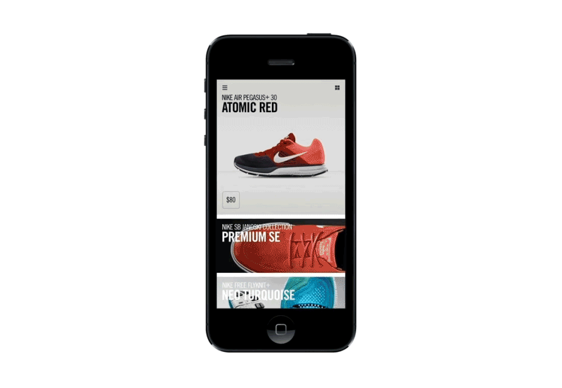

User Experience
in
Internet of Things
[UX in IoT]
http://marcodussin.github.io/luce_in_veneto
Ing. Marco Dussin
marco@duss.in - @MarcoDussin
per
Luce in Veneto
Qualcosa su di me

Front and Back End Engineer, Coworker @ TAG Padova & LMSpace Cittadella, Trainer, Product Designer, Beer Lover
http://marco.duss.in
it.linkedin.com/in/marcodussin/
Qualcosa su di voi
Slide rossa
Titolo di una sezione
Slide bianca
Spunti di discussione
Slide verde
Question time
Slide gialla
Workshop time
Esseri umani e strumenti
Esiste una relazione ricorsiva tra esseri umani e strumenti
Creiamo strumenti per migliorare le nostra vite
e questi strumenti modellano il modo in cui vediamo il mondo
Questa non è solo una intuizione: lo dicono le neuroscienze:
l'utilizzo di strumenti cambia fisicamente le nostre reti neurali in un processo chiamato neuroplasticità
Questo ha implicazioni sul modo in cui pianifichiamo il futuro?
- "sito" web
- perchè è basato su una visione "desktop" mentre il mondo è "mobile"?
- perchè la sua architettura "deve" essere gerarchica?
- perchè è solo bidimensionale?
- perchè possiamo vedere solo una pagina alla volta?
- e ancora, perchè chiamarle "pagine"?
La legge del martello
Parliamo di citofoni
...anzi, disegnamoli!


Customer Journey Map
...di un citofono!
Ci sono molti approcci al journey mapping, molti dei quali partono dalla comprensione delle mappe esistenti degli utenti al fine di cercare di migliorarle.
Scopriamo le aree di disagio, scomodità, bisogno e ricerca di valore, e incrementalmente cambiamo l'esperienza vissuta dagli utenti per cercare di di apportare miglioramenti.
Questo approccio è corretto per una innovazione iterativa...
... ma lo è anche per una innovazione dirompente?
In questo modo alla domanda "cosa è oggi..." si sta man mano sostituendo quella "cosa sarebbe se..."
Ovvero, forse, dovremmo partire da "come sarebbe l'ideale" per poi, man mano, arrivare all'oggi.
Ma questo è il ventunesimo secolo... torniamo un attimo indietro e rimettiamo i piedi per terra.
Il menu di oggi
| Argomento | Introduzione |
|---|---|
| Tempo già passato | 2 |
| Ergonomia cognitiva | 2 |
| Introduzione al percorso Lean UX | 2 |
| Branded interactions | 2 |
Ergonomia cognitiva
Il termine "Ergonomia" è stato usato per la prima volta da Wojciech Jastrzębowski in un giornale polacco nel 1857
Ergonomia: dal greco érgon (lavoro) e ńomos (regola, legge)
Nel 1949 lo psicologo K. F. H. Murrell diede al termine il significato attuale:
...è quella scienza che si occupa dell'interazione tra gli elementi di un sistema (umani e d'altro tipo) e la funzione per cui vengono progettati (nonché la teoria, i principi, i dati e i metodi che vengono applicati nella progettazione), allo scopo di migliorare la soddisfazione dell'utente e l'insieme delle prestazioni del sistemaI.E.A. (International Ergonomics Association)
Science Finds, Industry Applies, Man Conforms (La scienza scopre. L'industria applica. L'uomo si adegua)Motto della Chicago World's Fair del 1933
Henry Dreyfuss, Model 302 Telephone, 1937
Henry Dreyfuss, Model 500 Telephone, 1953

Henry Dreyfuss, Designing for People, 1955


...mentre tutti diamo la colpa a noi stessi, il vero responsabile – il cattivo design – passa inosservato. E' l'ora di cambiare”Don Norman 1996
I principi che un buon design dovrebbe seguire sono:
- fornire visibilità;
- fornire un buon mapping;
- fornire inviti e vincoli all'uso;
- fornire feedback;
- fornire consistenza;
- fornire un buon modello concettuale.
Fornire
visibilità

Esercizio: "la mia automobile"
Fornire visibilità (1)
Tutte le parti funzionali devono essere visibili e devono fornire il messaggio corretto su quello che si può fare
Fornire visibilità (2)
Le relazioni tra ciò che vogliamo fare e le parti dell'oggetto su cui agire devono essere evidenti.
 Rubinetti Treemme "Philo"
Rubinetti Treemme "Philo"
Fornire visibilità (3)
Il numero delle funzioni disponibili non deve superare eccessivamente il numero dei comandi utilizzabili
 Homepage di Google.it
Homepage di Google.it
Fornire un buon
mapping
Esercizio: "i miei fornelli"
Fornire un buon mapping (1)
Mapping significa correlazione tra la configurazione dei comandi disponibili per un dato oggetto e la configurazione delle parti di tale oggetto in cui si manifestano i risultati prodotti

Fornire un buon mapping (2)
...senza obbligare l'utente a sforzi mnemonici o a procedere "per tentativi"

Powerseat di una Mercedes-Benz E320 BLUETEC del 2008
Fornire un buon mapping (3)
Bisogna prestare particolare attenzione ai modelli culturali consolidati degli utenti

Fornire
inviti e vincoli all’uso
Esercizio: "la mia porta"


Fornire inviti e vincoli all’uso (1)
- Inviti (affordance): sono proprietà concrete e reali dell'oggetto che invitano l'utente ad utilizzarlo in un certo modo
- Vincoli (constraints): sono proprietà concrete o funzionalità progettate in modo tale da vincolare l'utente ad un dato uso dell'oggetto

Forbice Professionale K-Active Taping
Fornire inviti e vincoli all’uso (2)
Vincoli e inviti possono essere fisici, semantici, culturali o logici

Fornire
feedback
Esercizio: "il mio interruttore della luce"
Fornire feedback (1)
Pemettere all'utente di capire immediatamente, in modo sincronizzato, quale conseguenza ha seguito la sua azione, perchè possa verificare se è stata effettuata secondo le sue aspettative.
Se l'azione non può essere percepita, sono buoni sostituti a tale percezione i suoni, i colori, i cambiamenti di forma negli oggetti...

Fornire
consistenza

Esercizio: "le carte da gioco"
Fornire consistenza (1)
Progettare interfacce affinchè permettano simili operazioni ed utilizzino comandi simili per compiere compiti simili.
Permette all'utente di trasferire velocemente la conoscenza già acquisita a nuovi contesti e concentrarsi quindi sulle operazioni di rilievo.
Può essere controproducente.
Fornire consistenza (2)
Ci sono 4 tipi di consistenza:
- estetica (es: riconoscere una "Mercedes" da una "BMW")
- funzionale (es: i colori del semaforo)
- interna (es: le segnalazioni dei sentieri di montagna)
- esterna (es: le interfacce dei programmi per un dato sistema operativo)
Fornire un buon
modello concettuale

Esercizio: "il mio termostato"
Fornire un buon modello concettuale
Interagendo con un sistema (software o di altro tipo), una persona si costruisce nella testa un concetto mentale di che cosa il sistema e i suoi componenti siano, che proprietà abbiano e quali siano le interazioni possibili con essi. E' quindi la struttura delle convinzioni che una persona ha rispetto al modo in cui funziona una certa cosa.
Sistemi interattivi

Henry Dreyfuss, Princess Telephone, 1959


Modelli di interazione (1)
Donald Norman stabilisce 7 stadi dell'azione:
- L'utente stabilisce lo scopo
- L'utente formula l'intenzione
- L'utente specifica le azioni da compiere tramite l'interfaccia
- Il sistema esegue l'azione
- L'utente percepisce lo stato del sistema
- L'utente interpreta lo stato del sistema
- L'utente valuta lo stato del sistema rispetto allo scopo
Esecuzione e valutazione sono in un loop continuo
Modelli di interazione (2)
Secondo Norman alcuni sistemi sono più difficili da usare di altri perchè ci si trova ad annaspare nell'attraversare:
- il golfo dell'esecuzione: quando la formulazione delle azioni da parte dell'utente non coincide con le azioni permesse dal sistema
- il golfo della valutazione: quando le aspettative di cambiamento sullo stato del sistema da parte dell'utente sono diverse dallo stato raggiunto dal sistema stesso
Modelli di interazione (3)

Modelli di interazione (4)
Gli psicologi, come James Reason, che hanno tenuto dei cosiddetti "diari cognitivi" di ogni proprio errore, anche il più banale, hanno messo in evidenza come commettiamo errori sistematicamente e quotidianamente.
Modelli di interazione (5)
 James Reason: modello del formaggio svizzero
James Reason: modello del formaggio svizzero
Modelli di interazione (6)
 James Reason: modello del formaggio svizzero
James Reason: modello del formaggio svizzero
Modelli di interazione (7)
Possiamo distinguere tra due tipi di errore:
-
SLIP:
l'utente ha capito correttamente il sistema e il suo scopo, ha formulato correttamente l'azione ma ha compiuto poi una azione sbagliata (oppure la ha omessa, nel qual caso si usa anche il termine LAPSE). Sono errori di esecuzione di una azione corretta. MISTAKE:
l'utente e il sistema non riescono ad avere lo stesso scopo. Sono gli errori dovuti ad una azione non appropriata, anche se potenzialmente corretta.

"Slips result from automatic behavior... Mistakes result from conscious deliberations" [D. Norman]
Gli slip sono errori di esecuzione, mentre i mistake sono errori di pianificazione. Lo slip può essere risolto con un migliore design dell'interfaccia, il mistake con una migliore comprensione del sistema.

Capture Slip: andare al lavoro di sabato anzichè a casa
Omission Slip: non spedire una mail lasciata in sospeso
Loss of Activation Slip: scendere in garage e non ricordare perchè
Description Slip: strisciare la carta di credito nella porta dell'albergo anzichè la chiave
Associative Activation Slip: cercare di fare lo zoom con due dita sul vecchio tom tom
Perceptual Confusion Slip: lavarsi le mani con il gel per capelli
Reverse Schema Slip: buttare il portafoglio e tenere lo scontrino
Cross-talk Slip: iniziare un documento in inglese e finirlo in italiano

Modelli di interazione (8)
Un luogo comune da sfatare è che rendendo le tecnologie che usiamo sempre più pervasive e automatiche, ci proteggiamo dai rischi di errori. Ci sono delle situazioni, per le quali la psicologa Lisanne Baindbridge ha coniato il termine di «ironie dell'automazione» [http://j.mp/ironies], dove può accadere il contrario.
Introduzione al percorso Lean UX

11,6 secondi
(Jon Jenkins, Velocity 2011, https://youtu.be/dxk8b9rSKOo)
Sviluppo agile di software
Stiamo scoprendo modi migliori di creare software,sviluppandolo e aiutando gli altri a fare lo stesso.
Grazie a questa attività siamo arrivati a considerare importanti:
Gli individui e le interazioni più che i processi e gli strumenti
Il software funzionante più che la documentazione esaustiva
La collaborazione col cliente più che la negoziazione dei contratti
Rispondere al cambiamento più che seguire un piano
Ovvero, fermo restando il valore delle voci a destra,
consideriamo più importanti le voci a sinistra.
Che cosa è la "lean production"?


Toyota Production System (TPS)

Miglioramento Continuo (Kaizen)
Che cosa è il metodo "lean startup"?

The Lean Startup methodology has as a premise that every startup is a grand experiment that attempts to answer a question. The question is not "Can this product be built?" Instead, the questions are "Should this product be built?" and "Can we build a sustainable business around this set of products and services?" This experiment is more than just theoretical inquiry; it is a first product
Eric Ries
NON costruiamo oggetti che la gente NON vuole

Che cosa è la "lean UX"?
Il concetto di Lean UX nasce dal mettere assieme i principi di Lean Startup con le teorie di sviluppo agile di software. In aggiunta a queste due fondamenta, ce n'è una terza altrettanto importante: il Design Thinking come metodo adatto a fornire soluzioni pratiche e creative ai problemi.

Che cosa è la "lean UX"?
In aggiunta ai "pilastri" precedenti, la Lean UX pone meno enfasi nei "DELIVERABLES" e si focalizza maggiormente sulla comprensione condivisa dell'esperienza utente che si desidera fornire


Che cosa è la "lean UX"?
“Lean UX is, at its core, a mindset”
Jeff Gothelf
La Lean UX coinvolge team
- piccoli
- dedicati
- cross-funzionali
- che lavorano in spazi condivisi
- che comunicano tra di loro
- che imparano a rafforzare le proprie relazioni
Break down the silos!
Il processo di Lean UX

Lo scopo è far muovere in un percorso parallelo lo sviluppo e il design
Nordstrom Innovation Lab: Sunglass iPad App Case Study
In sintesi:
- team piccoli e multifunzionali
- designers + biz + developers + ... = 1 team
- la ricerca presso gli utenti è la miglior fonte di informazione
- concentrarsi nel risolvere il problema "giusto"
- generare molte opzioni e decidere velocemente quale perseguire
- riconoscere le ipotesi e validarle
Lo scopo è arrivare prima possibile a un "prototipo"
Il prototipo è il modello originale o il primo esemplare di un manufatto, rispetto a una sequenza di eguali o similari realizzazioni successive. Normalmente costruito in modo artigianale e in scala 1:1, sul prototipo verranno effettuati collaudi, modifiche e perfezionamenti, fino al prototipo definitivo, da avviare alla produzione in serie.
da Wikipedia
Quindi un prototipo è una primissima versione di una idea?
Sì, ma con qualcosa in più: è TESTABILE
1 - Supposizioni vs requisiti
suppórre v. tr. [dal lat. supponĕre, comp. di sub- e ponĕre «porre», propr. «mettere sotto»; il sign. corrente risale al lat. tardo] (coniug. come pórre). –
1. Ammettere per congettura; immaginare che una cosa sia o possa verificarsi in un determinato modo; fare una ipotesi che spieghi una realtà comunque osservata[...] anche nel linguaggio matematico e scient., ammettere come ipotesi per trarne conseguenze[...]. Anche, presumere, immaginare[...].
Treccani online
- Ogni decisione fatta a proposito dell'offerta del proprio prodotto è una decisione che impatta sull'esperienza del destinatario di tale prodotto
- Prioritizziamo il processo di apprendimento piuttosto che quello di crescita
- Le proprie supposizioni vanno dichiarate per poter essere testate
- Prioritizziamo il fare piuttosto che l'analisi
- Valutiamo i nostri risultati in modo continuo, e preparati anche a repentini cambi di rotta
Dichiarare le proprie supposizioni
Quali sono le supposizioni a proposito dei nostri utenti/acquirenti/clienti (i loro bisogni e le nostre soluzioni) che abbiamo posto a fondamento del progetto, e che, se confutate, ci porteranno al fallimento?
Esempi di supposizioni
- Come acquisiremo nuovi clienti?
- Come guadagneremo nuova liquidità?
- Chi sono i nostri competitor?
- Che cosa ci differenzia nel mercato?
- Quali sono i nostri rischi? Quale il maggiore?
- Come li supereremo?
Come validare le idee di prodotto? Come capire "quale" prodotto è desiderato?


Supposizioni
- Chi è l'utente?
- Quali risultati sono attesi?
- Che features sono necessarie per raggiungere tali risultati?
- Quali risultati di business sono importanti per noi?
2- Formulazione delle ipotesi
Noi crediamo che:
- [facendo questo, con questa feature]
- per [questo utente]
- otterremo [questo risultato]
Sapremo che è vero quanto avremo ottenuto
- [questa risposta dal mercato, questo risultato di business]
Clusterizziamo
- per bisogni oppure...
- per scopi oppure...
- per preferenze oppure...
- per obiettivi di business oppure...
- ...
Ordiniamo per priorità

3- Identificare le personas
4- dichiarare i risultati attesi e il modo per misurarli
Che cosa è "avanzamento"?
- Industria manifatturiera: produzione di beni di qualità
- Agile software: rilascio di software funzionante
- Lean Startup: validated learningi>
- Lean UX: risultati e loro impatto
Prodotto, risultato, impatto
- Prodotto: "il software che diamo al cliente", "il bene che inscatoliamo e spediamo"
- Risultato: "il cambiamento misurabile che abbiamo apportato nelle abitudini del cliente"
- Impatto: "la misura ad alto livello della salute del nostro business"
Prodotto, risultato, impatto
- Prodotto: "la nuova pagina di registrazione del sito"
- Risultato: "numero di utenti che arrivano alla fine del processo di registrazione senza fare errori"
- Impatto: "nuovi utenti registrati in un anno rispetto allo scorso"


AARRR è una metrica codificata da Dave McClure [http://www.slideshare.net/dmc500hats/startup-metrics-for-pirates-long-version]
- Acquisition: l’acquisizione, quindi portare gli utenti su di un sito da diversi canali.
- Activation: l’utente effettua la sua prima visita sul sito. Importante generare una esperienza utente che sia il più possibile soddisfacente e felice.
- Retention: gli utenti che ritornano, come aumentare la percentuale di ritorno, e come trattarli al meglio quando tornano.
- Referral: quando gli utenti cui piace il prodotto decidono di consigliarlo ad altri, magari anche in cambio di un compenso di qualche tipo.
- Revenue: la parte finale della metrica, da misurare, e usare per iterare sui cinque aspetti, l’utente genera monetizzazione.
5- MVP
MVP: Minimum Viable Product
Come Groupon iniziò come blog: http://www.nextbigwhat.com/groupon-story-297/
Branded Interactions
Che cosa è un "brand"?
Oggi?
Una possibile definizione di brand potrebbe essere la somma dell'esperienza del cliente con il relativo prodotto o azienda
Il brand trasmesso in ogni interazione, anche se microinterazione con il cliente per tutta la durata della relazione
- Logo: identifica la proprietà
- Marchio: rappresenta la fiducia
- Brand: modo di essere
Cosa sono le "branded interactions"?
Uniche e significative microinterazione
Es: Quando scorriamo la pagina verso il basso per aggiornare un’app e appare l’icona di caricamento, abbiamo compiuto una micro interazione.

Mostrare lo stato del sistema
Evidenziare i cambiamenti
Mantenere il contesto
Evidenziare layout non standard
Evidenziare le call to action

Visualizzare gli input
Presentare agli utenti dei tutorial
Le microinterazioni sono importanti perchè:
- In un mondo di dispositivi connessi, "cloud", il dispositivo in se' perde importanza
- Perde importanza avere "fisicamente" a disposizione il dispositivo
- Perde importanza la sua interfaccia: il dispositivo può imparare da solo
- Il behavioral input minimizza lo sforzo cognitivo richiesto all'utente
Al punto da dematerializzare il prodotto...
L'esperienza stessa è il prodotto
THE END
Marco Dussin - marco@duss.in - @MarcoDussin